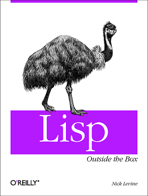

|
|
In May 2009 O'Reilly agreed to publish a book about Common Lisp, and I agreed to write it. My aim was to show people who suspected that Lisp was dead because it couldn't look outside the box, along with those who hoped it could but didn't know how, that the going wasn't all that hard. Although the book would introduce Common Lisp from scratch and give generous treatment to those features which make the language great, it wasn't going to cover the whole thing or anything like it. I wanted to make Lisp look easy and steer the novice away from the more complex edge cases. The core of the book would be a number of in-depth examples which between them thoroughly addressed the use of libraries whether or not these were written in Lisp. I planned to visit common, important utilities for dealing with persistence, threading, GUIs, system building and more. Examples would include: an end-user desktop application, a web server, and an introduction to getting Lisp working on a mobile phone. Nine months into the project my rubbish state of health forced me to abandon being an O'Reilly author and all work on the book ceased. I had written eleven chapters (with another 20 to go). Everything I wrote is now available under a Creative Commons license, in the hope that it might be useful to somebody. Please regard this as constituting an ex-work in progress which I deserted overnight 15 months ago: the writing, correcting and editing were uneven when I left off and, I regret, that's how they're going to stay. I was happier with some chapters (1, 16, 20 and in particular 21) and less so with others. And then there's a list of lesser known problems, here. The occasional book-related blog entries I penned while I was an author are here. Finally: I gave a talk about my experiences writing the book, along with some thoughts about lisp libraries in general, at the 2011 European Common Lisp Meeting. My slides are here (text / html) alongside some longer notes from which they were produced. |
 |
Available for DownloadHere are the chapters I completed. Or you can see how they were supposed to fit together as part of a whole. |
Copyright © Nick Levine 2009 - 2011. Some rights reserved. This work is licensed under the Creative Commons Attribution-NonCommercial-NoDerivs 3.0 Unported License. To view a copy of this license, visit http://creativecommons.org/licenses/by-nc-nd/3.0/